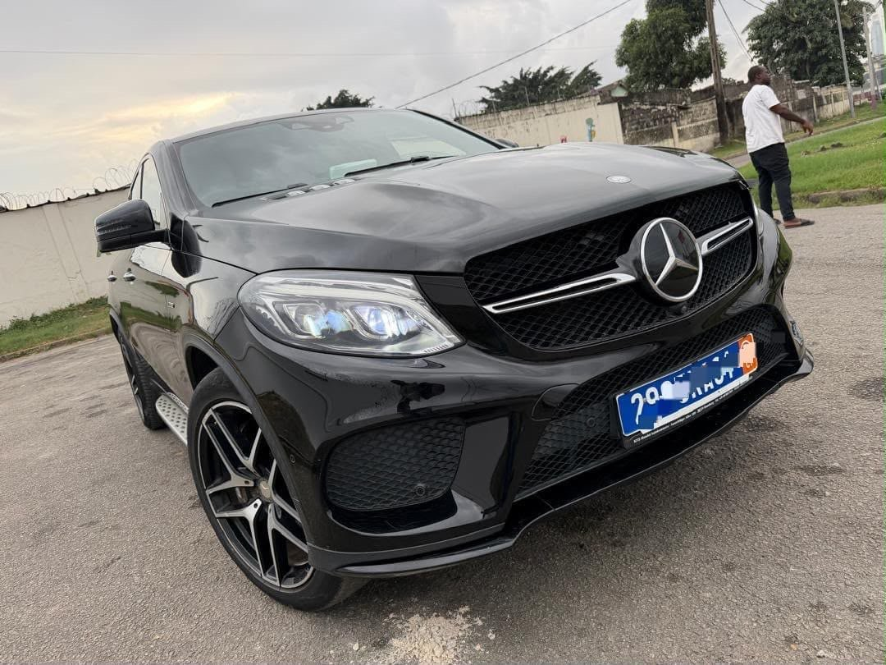

À vendreCocody
Mercedes GLE43
2016–2017, à confirmer · Essence V6 · Automatique
27 000 000 FCFA
Année annoncée2016–2017, à confirmer
ModèleGLE43
CarburantEssence
MoteurV6
BoîteAutomatique
IntérieurCuir
SiègesÉlectriques
ToitOuvrant panoramique
CoffreAutomatique
ClimatisationOui
PositionCocody
DocumentsPapiers à jour
Troc possible. Véhicule très propre et full options selon le vendeur. Intérieur cuir, sièges électriques, toit ouvrant panoramique et coffre automatique.
Disponibilité, kilométrage, équipements et documents à confirmer avec le propriétaire lors de la visite.